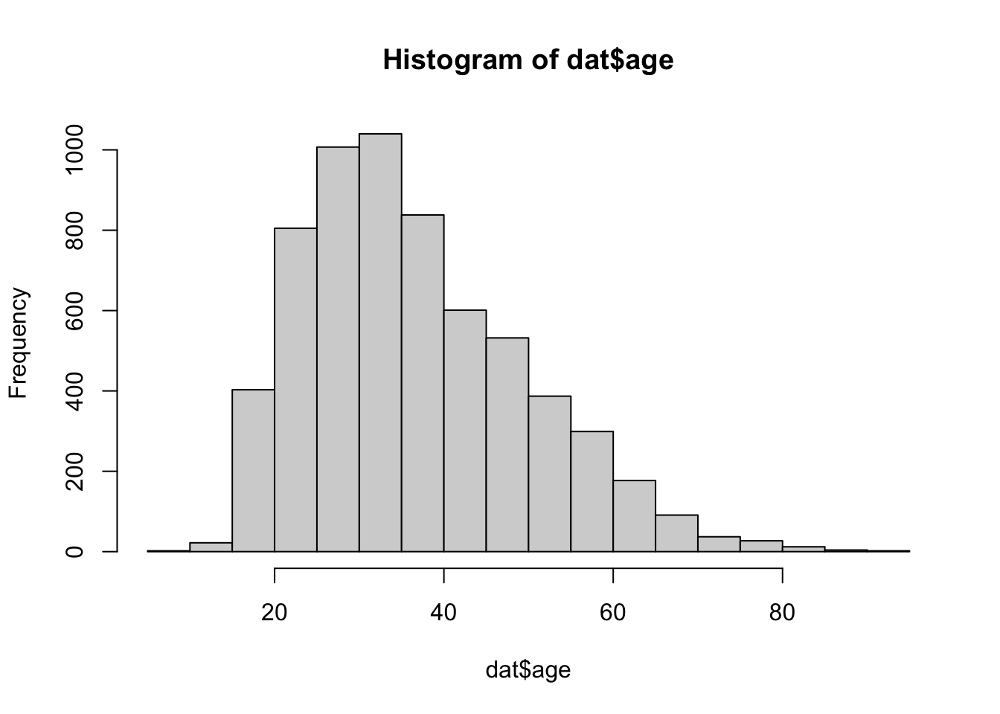
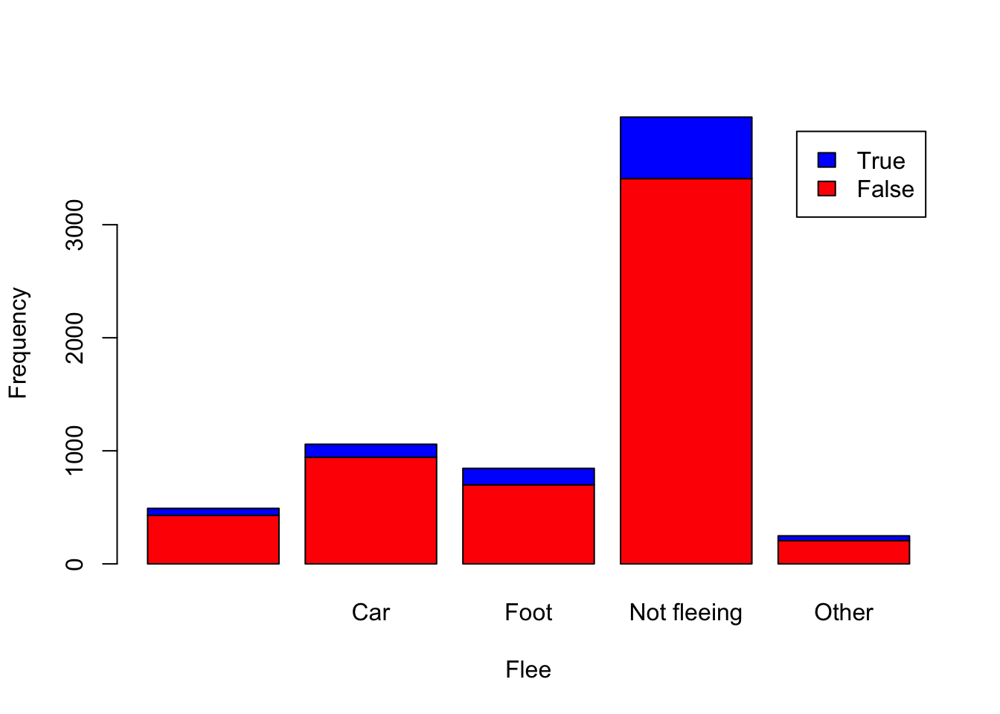

Create a folder in your computer (a good place would be under Crim 250, Exams).
Download the dataset from the Canvas website (fatal-police-shootings-data.csv) onto that folder, and save your Exam 1.Rmd file in the same folder.
Download the README.md file. This is the codebook.
Load the data into an R data frame.
dat <- read.csv("~/Documents/GitHub/SophieCRIM250/fatal-police-shootings-data.csv")This data is a recording of fatal shootings by police officers in the line of duty since Jan. 1, 2015. This data, as recorded in the Washington Post database, is separated by circumstances under which the fatality ensued.
dim(dat)## [1] 6594 17There are 6594 observations in this data set, categorized by 17 different variables.
names(dat)## [1] "id" "name"
## [3] "date" "manner_of_death"
## [5] "armed" "age"
## [7] "gender" "race"
## [9] "city" "state"
## [11] "signs_of_mental_illness" "threat_level"
## [13] "flee" "body_camera"
## [15] "longitude" "latitude"
## [17] "is_geocoding_exact"body_camera: This variable indicates whether or not the officer involved in the incident was wearing a body camera. flee: This variable indicates whether or not the victim appeared to be moving away from the officer at the time of the shooting, divided into three possibilities: fleeing in a car, fleeing on foot, not fleeing. armed: This variable indicates whether or not a victim was considered to be armed at the time of the shooting and if so, what they were armed with.
armeddat <- table(dat$armed)
armeddat##
## air conditioner
## 207 1
## air pistol Airsoft pistol
## 1 3
## ax barstool
## 24 1
## baseball bat baseball bat and bottle
## 20 1
## baseball bat and fireplace poker baseball bat and knife
## 1 1
## baton BB gun
## 6 15
## BB gun and vehicle bean-bag gun
## 1 1
## beer bottle binoculars
## 3 1
## blunt object bottle
## 5 1
## bow and arrow box cutter
## 1 13
## brick car, knife and mace
## 2 1
## carjack chain
## 1 3
## chain saw chainsaw
## 2 1
## chair claimed to be armed
## 4 1
## contractor's level cordless drill
## 1 1
## crossbow crowbar
## 9 5
## fireworks flagpole
## 1 1
## flashlight garden tool
## 2 2
## glass shard grenade
## 4 1
## gun gun and car
## 3798 12
## gun and knife gun and machete
## 22 3
## gun and sword gun and vehicle
## 1 17
## guns and explosives hammer
## 3 18
## hand torch hatchet
## 1 14
## hatchet and gun ice pick
## 2 1
## incendiary device knife
## 2 955
## knife and vehicle lawn mower blade
## 1 2
## machete machete and gun
## 51 1
## meat cleaver metal hand tool
## 6 2
## metal object metal pipe
## 5 16
## metal pole metal rake
## 4 1
## metal stick microphone
## 3 1
## motorcycle nail gun
## 1 1
## oar pellet gun
## 1 3
## pen pepper spray
## 1 2
## pick-axe piece of wood
## 4 7
## pipe pitchfork
## 7 2
## pole pole and knife
## 3 2
## railroad spikes rock
## 1 7
## samurai sword scissors
## 4 9
## screwdriver sharp object
## 16 14
## shovel spear
## 7 2
## stapler straight edge razor
## 1 5
## sword Taser
## 23 34
## tire iron toy weapon
## 4 226
## unarmed undetermined
## 421 188
## unknown weapon vehicle
## 82 213
## vehicle and gun vehicle and machete
## 8 1
## walking stick wasp spray
## 1 1
## wrench
## 1In the armed variable, I was most surprised to see that people were “armed” with a pitchfork (very medieval), a pen (???), and an air conditioner.
hist(dat$age)
The distribution shows a right skew to the ages of victims in recorded fatal shootings. I feel like this is fairly predictable, as the average age in the US is 38, and we know that fatal shootings often occur in over-policed low-income areas where the majority of people who are out and about are the working class of these areas, putting majority of their ages around 20-40 years old.
summary(dat$age)## Min. 1st Qu. Median Mean 3rd Qu. Max. NA's
## 6.00 27.00 35.00 37.12 45.00 91.00 308I would use the median of the data. Because the data is skewed, the median is a better measure of central tendency than the mean as it is more representative of the sample given what we know about it’s distribution. The median is 35, as in 35 years old is the average age of someone involved in a fatal shooting in the United States at the hand of police.
table(dat$gender)##
## F M
## 3 293 6298I do find this surprising. Given that there is a fairly predictable distribution of ages in this data set, you would assume there be an equally as predictable distribution of gender. However, knowing what we know about fatal shootings by police in the United States, the narrative portrayed by police officers often follows the line of not-being-confident-in-a-lack-of-threat-from-the-victim. While this narrative is incredibly frustrating, it does align with the uneven distribution of men and women in this event because women often are portrayed as being a lower threat level than men in general.
table(dat$body_camera)##
## False True
## 5684 910910/6594## [1] 0.1380042# prop.table(dat$body_camera)
# would have to convert to numeric, can just get proportion via simple mathAccording to the news, 910 of the officers had a body camera at the time of the incident. This is 13.800% of the incidents in this data. This proportion being so low is surprising to me because I thought that it was protocol as of the past few years for officers to wear body cameras when on duty. The fact that this statistic is so low is very concerning.
table(dat$flee)##
## Car Foot Not fleeing Other
## 491 1058 845 3952 2481058 + 845## [1] 19031903/6594## [1] 0.2885957The victim was fleeing in 1058 of the incidents (either by car or on foot: “other” answers and not included answers on this were excluded due to lack of information). This is 28.860% of the data set. This is not surprising given what we know about police brutality in the United States, but it is very concerning. This means that over 70% of victims who were shot fatally by police were not fleeing.
Hint 1: The categories along the x-axis are the options for “flee”, each bar contains information about whether the police officer had a body camera (vertically), and the height along the y-axis shows the frequency of that category).
Hint 2: Also, if you are unsure about the syntax for barplot, run ?barplot in R and see some examples at the bottom of the documentation. This is usually a good way to look up the syntax of R code. You can also Google it.
counts <- table(dat$body_camera, dat$flee)
barplot(counts, col=c("red", "blue"), legend=TRUE, xlab="Flee", ylab="Frequency")
From this relationship, we can see that there is an even proportion of body cam presence across all flee categories, demonstrating that the presence of a body cam does not seem to affect whether or not someone in this study fled or not. Though there is a section in the distribution that is unlabelled due to the flee variable being unmarked in these instances, even this variable demonstrates an even distribution.
Hint 1: The categories along the x-axis are the race categories and the height along the y-axis is age.
Hint 2: Also, if you are unsure about the syntax for boxplot, run ?boxplot in R and see some examples at the bottom of the documentation. This is usually a good way to look up the syntax of R code. You can also Google it.
Your answer here.
mydates <- as.Date(dat$date)
head(mydates)
(mydates[length(mydates)] - mydates[1])This code tells us the difference in time between the first and last recorded date in the data set.
Unfortunately, the reach of the police department is seen in the representation of police killings in reportings. Because an accurate report of fatal shootings at the hands of police relies on a pure and fully not corrupted police force and governmental power, there would be several levels of responsibility that would have to be upheld to ensure that all incidents of fatal shootings by police would be reported accurately. As the article by The Guardian says, “The same government responsible for this violence is also responsible for reporting on it.”
There is visibly missing data in the flee variable. This is likely not all the data that is missing from the data set because it is not rare for data to be missing in such a large data set like this.